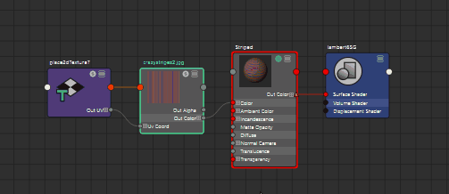

可以在首选项窗口的 Hypershade 窗口类别中设置以下首选项。
若要返回到出厂默认设置，请在此窗口中选择“编辑 > 还原默认设置”(Edit > Restore Default Settings)。这将重置首选项窗口中每个类别的首选项。
- 栅格
- 选择或取消选择此选项可启用和禁用栅格背景。
- 栅格捕捉
- 启用该选项可将节点捕捉到栅格。

比较：启用和禁用栅格捕捉
- 默认节点视图模式
- 选择 Hypershade 节点在 Hypershade 工作区中显示的默认视图。
-
单击每个节点右上角的
 （简单）、
（简单）、 （已连接）、
（已连接）、 （完全）或
（完全）或  （自定义）图标，更改相应节点的视图模式。如果未保存自定义属性视图，单击 4 可查看所有属性。
（自定义）图标，更改相应节点的视图模式。如果未保存自定义属性视图，单击 4 可查看所有属性。
-
- “简单模式”(Simple Mode)：将节点的视图模式设置为简单模式，以便仅显示输入和输出主端口。
- “已连接模式”(Connected Mode)：将节点的视图模式设置为已连接模式，以便显示输入和输出主端口，以及任何已连接属性。
- “完全模式”(Full Mode)：将节点的视图模式设置为完全模式，以便显示输入和输出主端口，以及主节点属性。给定节点的主属性集基于属性的特性，例如，它们是可设定关键帧还是为动态。
- “自定义模式”(Custom Mode)：将节点的视图模式设置为自定义模式，以便节点以自定义属性视图形式显示。您可以通过以下方法为每个节点创建自定义属性视图：在节点上单击鼠标右键，然后选择“编辑自定义属性列表”(Edit Custom Attribute List)。有关详细信息，请参见自定义节点属性列表。
注： 如果您选择“自定义模式”(Custom Mode)作为“默认节点视图模式”(Default node view mode)，则未保存自定义属性视图的任何节点以其完全模式显示。
- 默认节点样例大小
-
用于设置 Hypershade 窗口样例在 Hypershade 工作区中显示的大小。在“大”和“小”之间选择。
在大 Hypershade 节点样例和小 Hypershade 节点样例之间切换
-
在任何视图模式下，都可以通过单击工具栏中的
 在节点样例的较大版本和较小版本之间切换。如果单击图标而不选择任何节点，则所有节点都会受到影响。
在节点样例的较大版本和较小版本之间切换。如果单击图标而不选择任何节点，则所有节点都会受到影响。
或者，可以右键单击节点，然后从节点标记菜单中选择“切换样例大小”(Toggle Swatch Size)或“切换选择样例大小”(Toggle Selection Swatch Size)。
“切换选择样例大小”(Toggle Selection Swatch Size)将影响所有选定节点。“切换样例大小”(Toggle Swatch Size)仅影响从中选择了菜单项的节点。
- 有关详细信息，请参见在节点编辑器和 Hypershade 中切换节点样例大小。